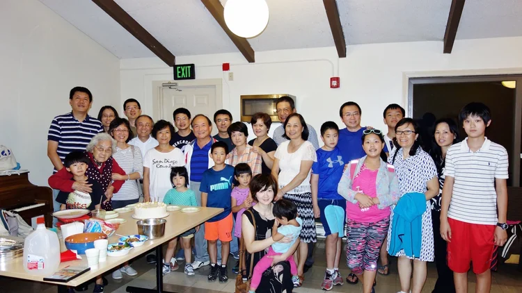
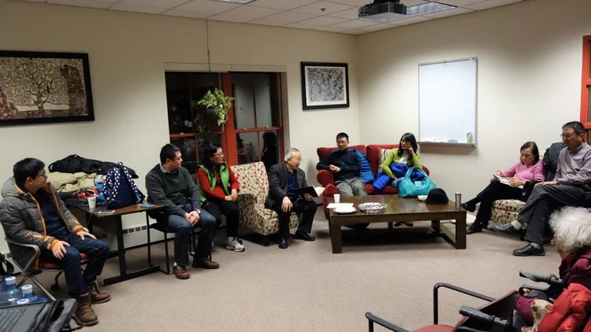
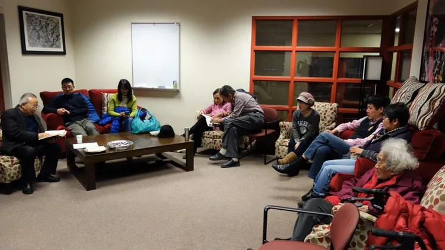

京士頓團契
Kingston Fellowship
京士頓團契
Kingston Fellowship
京士頓華人基督徒團契是一個由羅德島大學華人留學生和訪問學者組成的基督徒群體，大多數成員家庭以普通話交流。我們每週聚會，研讀神的話語、彼此代禱、互相激勵建立，使我們能在基督裡一同成長，彼此服事。
The Kingston Chinese Christian Fellowship is a Christian group comprised of Chinese students and visiting scholars at the University of Rhode Island, with most member families speaking Mandarin. We meet weekly to study God's Word, pray for one another, encourage and build each other up, so that we can grow together in Christ and serve one another.
♥ 聚會時間：每週六晚上七時 ♥
♥ Meeting Time: Every Saturday evening at 7:00 PM ♥
簡短歷史
A Short History
1994年9月，潘旺沙牧師帶領十幾位在京士頓羅德島大學的弟兄姊妹和慕道友來到吳執事的家中。吳執事邀請宋執事和高執事參與團契事工。此後數年，神帶領幾位羅德島大學的教授——王教授夫婦、馬教授及其母親、林教授夫婦——加入羅德島大學京士頓華人基督徒團契的事工。聚會地點從吳執事和王教授的家、研究生宿舍社區中心，演變為後來的多元文化學生中心。早期查經組成員主要是來自台灣和中國大陸的研究生。近年來，團契更側重於訪問學者及其家屬。透過這個查經組，神帶領許多留學生、訪問學者及其家屬認識耶穌，在教會受洗受建立，參與事工，忠心地在羅德島南部為主作見證，熱忱地服事一批又一批的留學生、訪問學者及其家屬。大多數弟兄姊妹遵從神的引領，分散到美國各地，在不同教會事奉主。各位教授仍忠心地每週六維持查經和團契，持續給予京士頓附近有興趣的華人認識耶穌和創造他的真神的機會。
In September 1994, Pastor Pan Wangsha brought over a dozen brothers and sisters and seekers from the University of Rhode Island in Kingston to Deacon Wu's home. Deacon Wu invited Deacon Song and Deacon Gao to participate in the fellowship's ministry. In the following years, God led several professors from the University of Rhode Island—Professor Wang and his wife, Professor Ma and his mother, and Professor Lin and his wife—to participate in the ministry of the University of Rhode Island Kingston Chinese Christian Fellowship. The meeting places evolved from Deacon Wu and Professor Wang's home and the community center in the graduate student dormitory to the later multicultural student center. Early Bible study group members were mainly graduate students from Taiwan and mainland China. In recent years, the fellowship has focused more on visiting scholars and their families. Through this Bible study group, God led many international students, visiting scholars, and their families to know Jesus, be baptized and edified in the church, and participate in ministry, faithfully bearing witness for the Lord in the southern part of Rhode Island and zealously serving wave after wave of international students, visiting scholars, and their families. Most of the brothers and sisters followed God's guidance and dispersed to various parts of the United States to serve the Lord in different churches. The professors still faithfully maintained the weekly Bible study and fellowship every Saturday, continuing to give interested Chinese people near Kingston the opportunity to know Jesus and the true God who created Him.
團契相片集
Fellowship Gallery



Join Us Online
無法親自出席？線上觀看直播或隨時收看錄影。
Can't make it in person? Watch our services live or access recordings anytime.